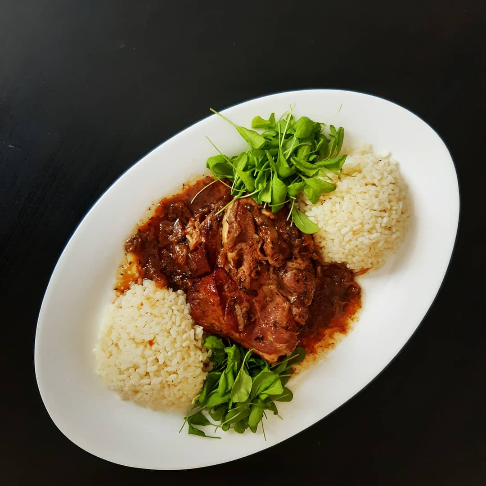

Žerucha podľa @jajfil — Normy Jedál
Dusené bravčové na citrónovej šťave s tymiánom
-------------------------------------------------------------------------------
Ingrediencie
500 g bravčového plece alebo krkovička
30 g bravčová masť
2 ks cibuľa
3 ks strúčik cesnaku
1 ks citrón
soľ
1 čl tymián
3 ks bobkový list
Postup
Mäso umyjeme, osušíme, prešpikujeme cesnakom, osolíme a sprudka opečieme z každej strany na rozpálenej masti. Vyberieme na bok. Cibuľu nakrájané na prúžky a opražíme vo výpeku dozlatista. Pridáme tymián, bobkový list, premiešame a vložíme späť mäso. Zalejeme pol litrom vriacej vody a vytlačíme šťavu z citróna. Zakryjeme a dusíme do mäkka. Prípadne tlakovom hrnci 40 min od dosiahnutia tlaku. Keď je mäso hotové nakrájame ho na plátky a podávame s ryžou.
#Bravcove#pork#meat#masko#rice#ryza#zerucha#food#jedlo#recipe#recept#thyme#tymian#lemon#citron#homecooking#obed#lunch#yummy#